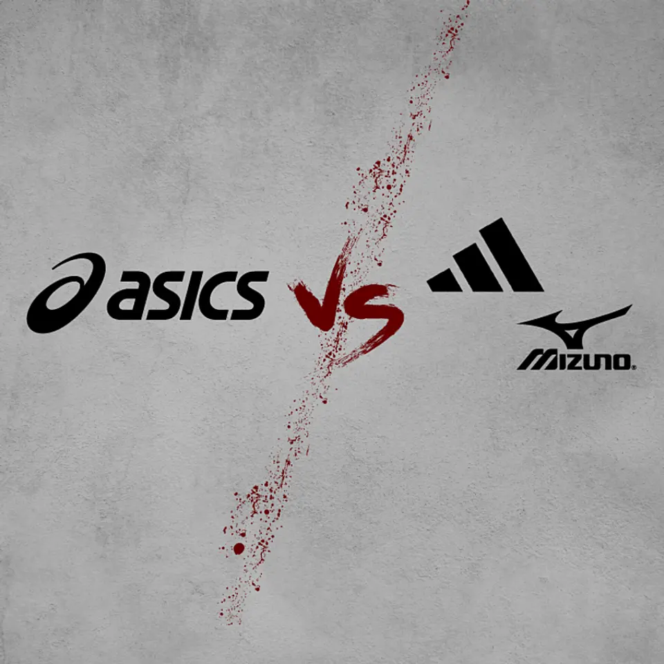
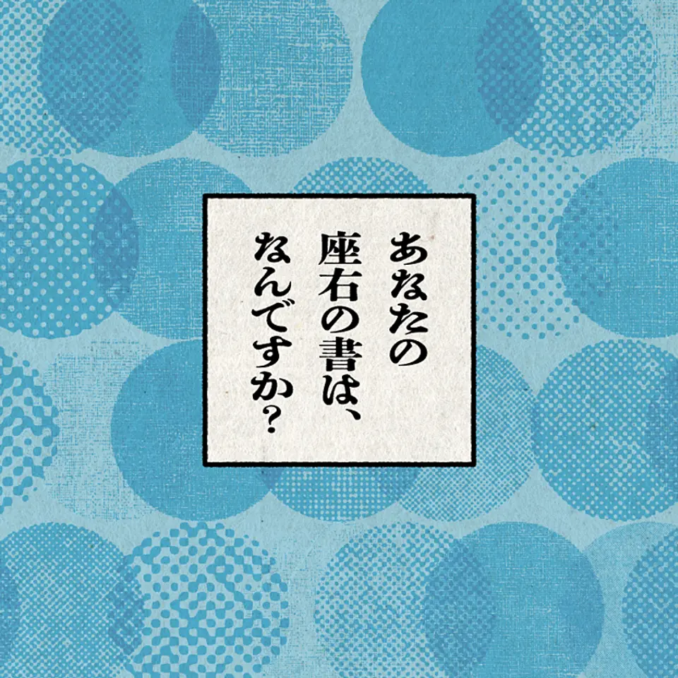
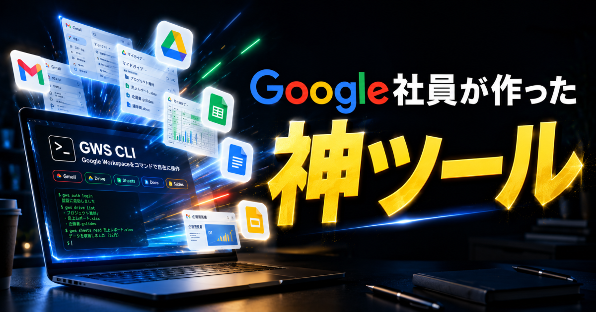
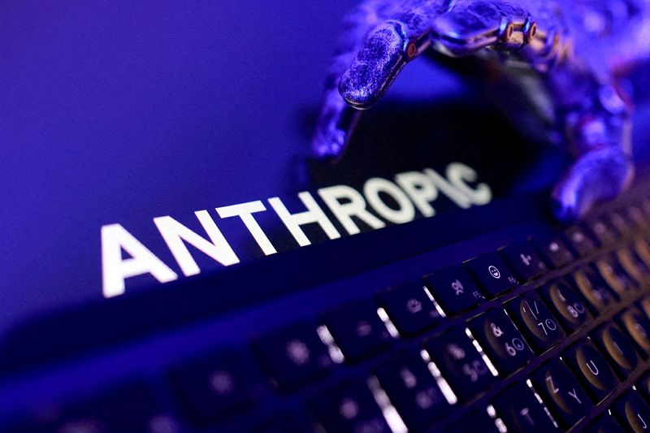

記事別メモ
1. 【異変】目標取り下げ。テスラ「ロボタクシー」失速の理由
発行日時: 2026/08/13 05:30 JST
あなたに関係ありそうな理由: AIを実サービスへ広げる際は、性能の高さだけでなく、事故時の安全、利用者の信頼、地域との合意までを同時に設計する必要があるから。
テスラの企業価値を支える柱の一つ、無人ロボタクシーが当初の見通しより遅れている理由を、同社が語る「ナインの行進」から読み解く記事である。イーロン・マスクCEOは前年、2025年中に全米人口の半分をカバーする勢いで拡大すると述べた。しかし2026年8月時点で、米オースティンやサンフランシスコなどで「Robotaxi」と呼ぶ配車サービスは展開していても、大半は安全監視員が同乗する運行にとどまる。テキサス州への届出ベースでは、無人運行が認められた車両は5月末時点で42台。第三者サイトの集計でも直近30日に確認された無人車両は27台で、6月時点で3871台を運行するWaymoとの差は大きい。専用EV「サイバーキャブ」も量産の記載が決算資料から外れ、計画の実行速度が問われている。
マスク氏が言う「ナイン」は、信頼性を99.9％、99.99％と高めていく考え方だ。記事は、運転支援なら人が最終的に介入するが、無人で不特定多数を乗せるロボタクシーでは、事故率を人間を超える水準まで下げなければ社会的に受け入れられないと説明する。マスク氏自身は99.999999％を理想に挙げた。カメラとAIを軸にするテスラに対し、Waymoは高精度地図、LiDAR、レーダーも使う。アプライド・インテュイションやWayveの関係者も、低コストなカメラの利点を認めながら、特に無人タクシーでは複数センサーの有効性に触れている。ここで争われているのは、走りの巧拙ではなく、まれな例外をどこまで安全に処理できるかである。
表示コメントでは、データ上の安全と、住民や行政から安全だと信じてもらうことは別だという論点が出た。先行するWaymoは地域団体や消防・警察との連携を重ね、新都市へ入る型をつくっているという。建設の無人化のように危険区域を隔離できない公道では、認識精度だけでなく、車両、通信、運用、説明責任を含む総合的な信頼性が必要になる。今後は台数だけでなく、無人運行の地域、介入や事故の指標、センサー構成、自治体との合意がどう積み上がるかを追いたい。それらが安全性能と社会受容を同時にどこまで押し上げるかが、事業の成否を左右する。
仕事や会話で使える一言: AIの実装で最後に問われるのは、平均性能よりも例外時を任せられる信頼です。
NewsPicks原文を読む
2. 【決断】オニツカが「アシックス」になった日
発行日時: 2026/08/13 05:30 JST
あなたに関係ありそうな理由: 競争の単位が変わった時、事業の足し算だけでなく、理念・人事・制度までを変革の土台にする視点が役立つから。
オニツカタイガーが三社合併を経てアシックスへ生まれ変わった過程をたどり、競争環境の変化にどう組織で応えたかを描く記事である。敗戦後の神戸で鬼塚喜八郎が始めた鬼塚商会は、バスケットボールシューズから出発し、「タイガー」ブランドで海外へ進出した。ところが1976年のモントリオール五輪で、競争の土俵がシューズ性能だけではなくなっていることを痛感する。アディダスは選手だけでなく大会関係者やボランティアまでウエアとシューズで包み、総合スポーツ用品メーカーとして存在感を示した。国内でも、総合メーカーのミズノと生産力を持つ月星化成の連合が迫る。シューズ専業のままでは、世界にも国内にも対応しにくい局面だった。
鬼塚は自前で全てを抱え込むのではなく、ネット製品に強いジィティオ、ニット製品に強いジェレンクとの合併を選んだ。相手選びで重視したのは規模や財務より、「最後に裏切られても仕方がないと思える」信頼だったという。ただ、同族企業を含む三社の合併は、看板を一つにするだけでは進まない。対等合併を実態にするため、三つの労組が同じ条件で話せるようにし、人事と利益配分を説明した。旧役員32人を16人へ半減し、非常勤役員の勇退や一般社員への降格もあったが、出身会社や血縁より能力を基準にする方針を貫いた。賃金も低い側を引き上げながら数年かけて揃えた。
新社名ASICSは「Anima Sana In Corpore Sano」、健全な身体に健全な精神があれかしという創業理念のラテン語から生まれた。親しんだオニツカタイガーの名を一度封印したのも、新ブランドで世界と戦う決断だった。記事は、2027年にオニツカタイガー事業が分社化予定である現在にもつなげる。表示コメントでは、1970年代の「総合化」と今の「ブランド価値の再定義」は逆向きに見えても、競争単位の変化を読む点は共通するという見立てが出た。変革では事業ポートフォリオだけでなく、誰が納得し、何を基準に処遇され、どの理念を残すかまで設計する必要がある。歴史を読む価値は、合併の成功談をなぞることではなく、自社の競争単位が変わった時に何を変え、何を核として残すかを考えることにある。

仕事や会話で使える一言: 競争の土俵が変わる時は、事業の足し算だけでなく、納得できる人事まで変える必要があります。
NewsPicks原文を読む
3. 【業界別】専門家61人に聞く、何度でも読み返したい一冊
発行日時: 2026/08/13 05:30 JST
あなたに関係ありそうな理由: AIで要約にすぐ届く時代だからこそ、仕事の判断や創作の土台になる一次資料・読書・自分たちの記録をどう残すかを考える材料になるから。
AIが要約や解説をすぐ返し、時間対効果だけで読書を測りがちな時代に、「何度でも読み返す一冊」を業界別に尋ねた企画である。記事は、マーケティング、AI・テクノロジー、製造業などで働く61人のプロフェッショナルへ、長く手元に置く本とその理由を聞く。導入で引用するのは、次々に本を渡り歩くより優れた著者のもとにとどまる大切さを説いたセネカである。たくさん読むことを否定するのではなく、迷った時に戻る本、考え方の一部になった本との関係を問い直す。紹介されるのは専門書だけではない。イノベーション、マーケティング、組織、キャリア、哲学、古典、小説、漫画まで幅がある。選ぶ人の仕事や、読み返す時に抱える問いが、選書理由を通して見えてくる構成だ。
例えば、ココ・シャネルを革新者として読む本からは、流行の速い領域でも「女性の窮屈さからの解放」という哲学を持つことの意義が語られる。『枕草子』には、事実を変えずにどの瞬間を切り取るかという編集の視点を見いだす。新規事業、マーケティング、マネジメントへ寄与したという実践の説明もあり、本を知識の倉庫ではなく、判断や行動を繰り返し整える道具として扱っている。AI・テクノロジーの領域では、組織の意思決定を限定合理性から捉える視点や、技術を便利な道具に閉じず社会の見方を変えるものとして考える読書が紹介される。答えを直ちに得るためではなく、問いの立て方を変える本が並ぶ。
表示コメントでも、読み返す本は困った時や迷った時に初心や土台を確かめる作用を持つという声があった。さらに、組織にとっての「座右の書」は外から買えるものだけではなく、事故報告、外れた予算、揉めた契約などの自社記録を検索・再読できる形に残すことだという見解も出た。これはAI活用にも直結する。ツールがどれほど進んでも、何を読み返せるかは自分たちが残した一次資料の厚みに依存する。新しい情報を追うだけでなく、何度も戻る本、判断の経緯、現場の記録をどう選び、どう再利用できる形にするかを見直したい。誰が何を根拠に決めたかまで遡れる記録は、次の担当者の学びにもなる。優れたツールは記憶の代わりにはならないが、残した記録を再び問い直す速度は上げられる。

仕事や会話で使える一言: AI時代ほど、読み返せる本と自分たちの一次記録が判断の土台になります。
NewsPicks原文を読む
4. 【必見】Google社員が作った神ツールの全貌
発行日時: 2026/08/13 06:30 JST
あなたに関係ありそうな理由: Google Workspaceをまたぐ定型業務を、アプリ単位ではなく一連のプロセスとしてAIに任せる発想と、その安全な始め方を具体的に考えられるから。
Google Workspaceの各サービスを一つのコマンド体系で横断できる「Google Workspace CLI（GWS CLI）」を、AIエージェントと組み合わせた活用例で紹介する記事である。記事によれば、GWS CLIはGoogle社員が2026年3月にGitHubで公開したオープンソースのコマンドラインツールで、Drive、Gmail、Calendar、Sheets、Docs、Chat、Adminなどを扱える。人がコマンドを使うだけでなく、Claude CodeやCodexのようなエージェントが呼び出すことを前提にしており、出力は構造化JSONで後処理しやすい。メール、会議準備、ファイル整理などの業務パターンを助けるスキルも同梱されているという。ポイントは、アプリごとの操作を速くするだけでなく、複数アプリの間で人が情報を受け渡していた流れを、一つの業務として扱えることにある。
記事の実演では、日付表記と店舗名がばらばらな約500行の売上明細を、自然言語の指示で整える。日付列の数式を追加し、表記ゆれを正式名へそろえることで、後から行が増えても使える形にする。さらに売上明細、施策カレンダー、広告費、在庫・欠品ログ、顧客セグメントを突合して分析用シートを作り、レポートをDocsへまとめ、リンクを添えたメール下書きまでつなげる例が示される。毎朝の集計なら、AIにGoogle Apps Scriptの設計、作成、テスト、修正、トリガー設定まで任せる使い方も紹介する。テンプレートのスライドと企画文書から、新しいスライドを生成する例もあり、個別アプリの操作より業務の受け渡しを減らすことに力点がある。
ただし、記事自身も初期設定にGoogle Cloud Platformの設定が必要だとする。表示コメントでは、横断できる範囲が広いほど誤操作の影響も広がるため、最初から全社データへつながず、一つの定型業務に絞るべきだという指摘があった。参照範囲、書き込み先、メール送信前の承認を固定し、「人の手戻りなしで完了した割合」で効果を測る提案も実務的だ。便利なCLIを導入することが目的ではない。どの情報を読ませ、何を自動で書き込み、どこで人が判断するかを業務単位で決めることが、Workspace横断エージェントを安全に役立てる前提になる。

仕事や会話で使える一言: AIの価値はアプリ操作の速さではなく、手戻りなく完了する業務の割合で測ります。
NewsPicks原文を読む
5. 米アンソロピック、Ｄｅｃａｒｔ ＡＩ買収へ協議＝関係筋
発行日時: 2026/08/13 13:31 JST
あなたに関係ありそうな理由: 生成AIの競争はモデルの賢さだけでなく、推論を速く・安く・安定して届けられるかという原価と運用の競争へ広がっているから。
Anthropicが、NVIDIAの支援を受けるAIスタートアップDecart AIの買収を協議していると報じたロイター記事である。関係者によれば、取引は初期段階で、買収額は約60億ドルに達する可能性がある。Anthropicはコメントを控え、Decartからもコメントは得られていないため、成立はまだ確定していない。Decartは独自のAIモデルだけでなく、AIインフラと最適化技術を開発する企業で、合意に至ればチームはAnthropicの推論・パフォーマンス部門へ加わる可能性がある。Decartは5月、Radical Ventures主導でNVIDIAも新規投資家として参加した資金調達で3億ドルを調達したとされる。報道の焦点は、より大きなモデルを買うことより、すでにあるモデルを大規模に動かす基盤をどう手に入れるかにある。
生成AIが実利用へ進むほど、性能だけでは利用者の価値になりにくい。応答に何秒かかるか、どれだけの電力や計算資源を使うか、APIの単価をどう抑えるか、混雑時にも安定して動くかが、サービスの利益と継続利用を左右する。AIモデルと半導体、クラウド、最適化ソフトを別々の会社として見るだけでは、競争構造を捉えにくくなっている。Decartの取得が実現すれば、Anthropicは推論処理を最適化する技術とチームを内製化し、需要拡大に合わせた性能と原価の改善を狙うことになる。もっとも、買収額の大きさが顧客価値を保証するわけではない。組織と開発基盤の統合、既存サービスへの反映、実運用での効果がその後の課題になる。
表示コメントでは、「モデルの精度競争」から「低遅延・低コストで大量のリクエストを回す原価率の競争」へ主戦場が移っているという見方が多かった。一方で、使う企業は買収報道だけで基盤の選択を変えず、機能提供後に同じ業務で応答時間、エラー率、利用単価、出力品質を測るべきだという指摘もある。推論コストが下がっても、入力する自社データが紙、個人の表計算、散在した写真のままなら、良い答えは出しにくいという実務側のコメントも重要である。提供側は計算を効率化し、利用側は業務データと評価基準を整える。両方が揃って初めて、安価になったAIが実際の業務成果へつながる。今後は、協議の成否に加え、統合後の性能・価格・信頼性が公開指標でどう変わるかを見たい。

仕事や会話で使える一言: AIの次の差は、どれだけ賢いかだけでなく、どれだけ安定して安く動くかでつきます。
NewsPicks原文を読む